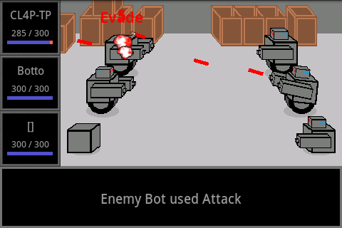
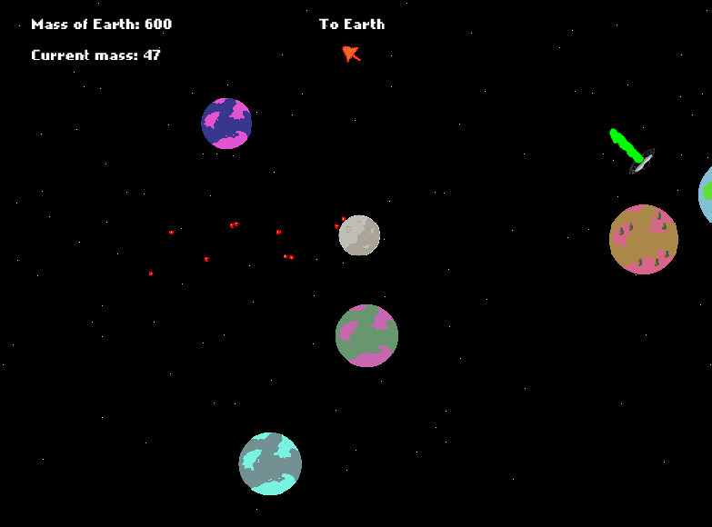
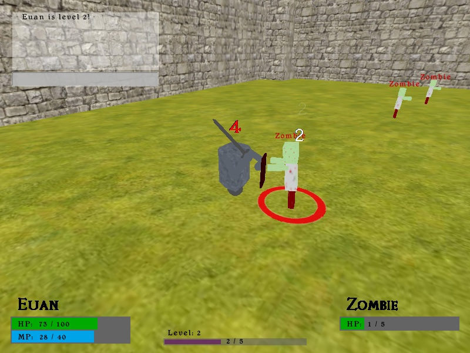
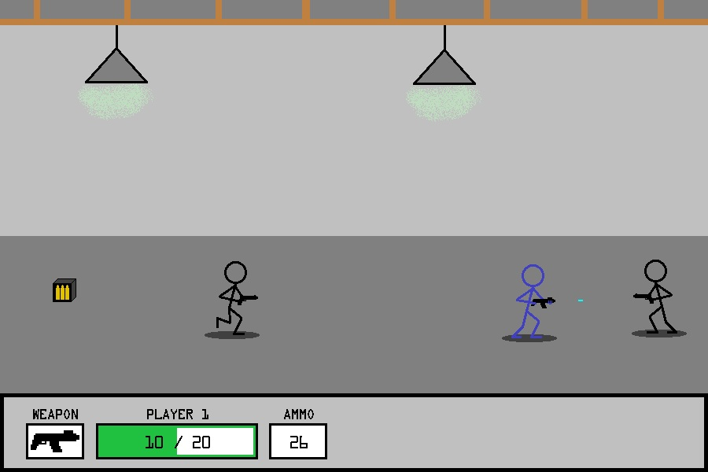

Procedural City Generator
This application was developed as the software solution for my Master's dissertation project. Through the use of procedural algorithms, the software will generate and render the 3D model of a city's road network and buildings.
This project received grade B (85%).
It was created using C++ and Direct3D, with the following features:
- Road network generation using L-systems which form realistic patterns.
- Building generation using a combination of floor plan extrusion and shape grammars.
- City layout through the definition of city zones which control the road and building types in an area.
- Settings file for customisation of the generation process.
Download executable
here
.
Requires DirectX runtime (
download here
).
Zombie Shooter
A first person shooter game set in a zombie infested city at night. The objective of the game is to escape the city before being eaten.
Developed as university coursework - grade A (90%).
The game was written in C++ using Direct3D. The following features were implemented:
- Shader effects for lighting and fog.
- Sound effects for zombies, shooting and getting hurt.
- Menu system.
- Heads up display showing player HP and ammo.
- Procedurally generated city.
- Collision detection for buildings.
- Zombie AI to chase the player.
Download game
here
.
Requires DirectX runtime (
download here
).
Software Portfolio - University Projects
Skateboarding Gorilla
This game features a skateboarding gorilla which the player must control as he makes his daring escape from the circus. They must reach the end of the level without losing all energy, while avoiding clowns and collecting bananas.
It was written in C# and XNA 3.1 as part of a group project for which I was awarded grade A (88%).
My role in the group was lead programmer and my responsibilities included assigning tasks to other programmers and integrating their work into the main project.
Click here
for a full list of my contributions to the project.
Download game
here
.
Requires XNA 3.1 runtime (
download here
).
Robot Battle
(current project)
A 2D robot battling game being developed for the Android platform, it has the following features:
- Customise robots by changing their body, weapons, propulsion and head parts to change how they perform in combat.
- Each robot part has its own graphic. The parts act as links in a kinematic chain, allowing for animations to be created by rotating and translating (such as the robot aiming towards its target in the screen-shot).
- Turn based combat, similar to 2D Final Fantasy games.
The game is being developed in Java using the Android SDK.
Spare-time Projects
Download CV
Euan MacDougall

BSc (Hons) Computer Science
Heriot-Watt University, Edinburgh
MSc/PGDip Computer Games Technology
University of Abertay Dundee

Let's Go Moon
An arcade style game in which the player controls the moon, smashing into other planets and objects in space to grow bigger, with the objective of becoming big enough to smash through the Earth.
It was developed as a group project over three days for the Ludum Dare competition with the theme "tiny world". We were a two person group, I was responsible for most of the programming.
The game was developed using ActionScript 3 with the Flixel engine.
Ludum Dare page
.


Multiplayer Game
My attempt at creating an MMORPG style game while learning basic network programming. It features familiar RPG elements such as fighting monsters and can support many players at once through a client-server networking structure.
The game is developed in C++, using the Irrlicht 3D engine and RakNet networking engine.
2D Shooter
A 2D side-scrolling game in which the player must shoot their way through a variety of levels, killing enemies and collecting items.
This game was developed as a summer project using C++ and Simple DirectMedia Layer.
Download game
here
.